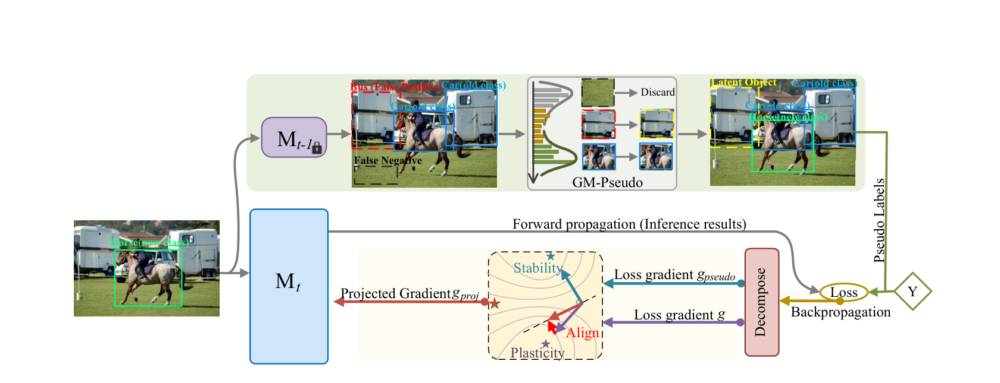
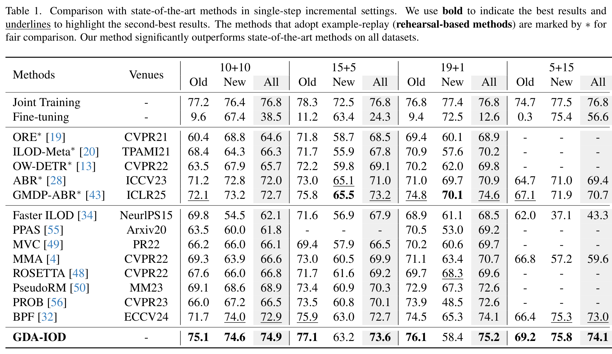
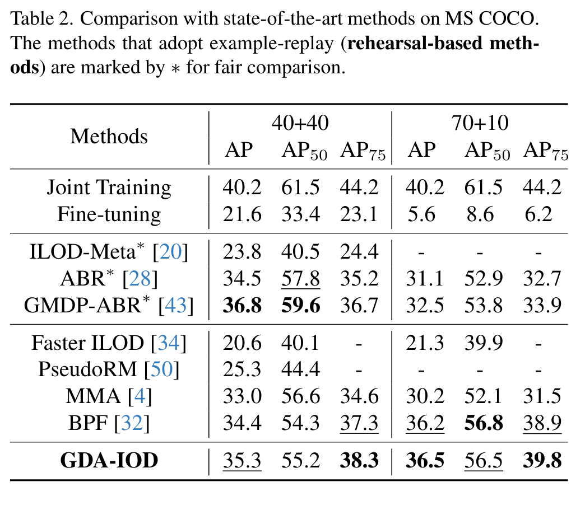
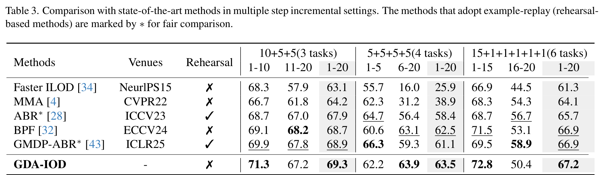
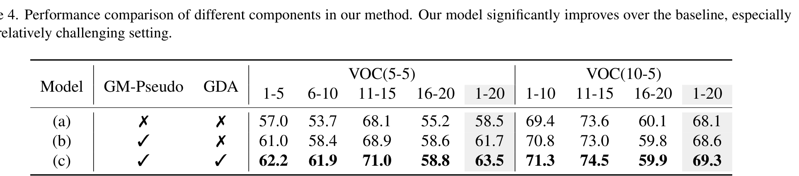

PAPERNOTE / FULL PAPER REVIEW
2025 · ICCVGradient Decomposition and Alignment for Incremental Object Detection
本頁依據使用者提供的 ICCV 2025 原始 PDF 整理。圖表由原始 PDF 頁面裁切；未在論文提供的 DOI 或其他書目資訊不自行補填。
ABSTRACT / 論文摘要
摘要與研究概覽
增量式物件偵測（Incremental Object Detection, IOD）希望模型能隨時間學習新物件類別，同時保留先前學過的類別知識。既有方法多使用 knowledge distillation 緩解災難性遺忘，但在新階段訓練資料中，舊類別物件通常沒有標註，模型可能因此將這些前景物件誤判為背景。
本文提出 GDA-IOD，先使用舊模型對目前訓練影像進行推論，再以 Gaussian Mixture Model（GMM）依信心分數估計舊類別物件的偽標籤。高信心預測用於監督訓練；中信心預測則視為潛在物件，避免被 Region Proposal Network（RPN）當成負樣本。接著，方法將舊類別偽標籤所產生的梯度與整體訓練梯度分解並對齊，降低學習新類別時對舊知識的負面影響。
PAPER INFORMATION / 論文資訊
Luo, W., Zhang, S., Cheng, D., Xing, Y., Liang, G., Wang, P., & Zhang, Y. (2025). Gradient Decomposition and Alignment for Incremental Object Detection. Proceedings of the IEEE/CVF International Conference on Computer Vision (ICCV).
作者程式碼：github.com/FHR-L/GDA-IOD
整理範圍：原論文 Abstract、Sections 1–5、Figures 1–6、Tables 1–4。
01 / INTRODUCTION
第一章：研究背景與問題定義
1.1 增量式物件偵測
一般物件偵測通常假設所有目標類別及其完整標註資料在訓練開始時就可取得。IOD 則將訓練分成多個連續階段，每個階段只提供當前新類別的資料與標註，模型必須在不重新存取先前資料的情況下持續更新。
1.2 核心困難：舊類別物件缺少標註
- 新階段的訓練影像可能同時包含舊類別與新類別物件，但資料只標註當前階段類別。
- 未標註的舊類別前景可能被當成背景負樣本，造成舊知識進一步遺忘。
- 知識蒸餾能約束模型輸出或特徵，但未必直接處理目前影像中未標註的舊類別物件。
1.3 本文的解決方向
作者將問題拆成兩部分：先估計目前影像中的舊類別物件，補足訓練監督訊號；再調整新舊類別梯度的更新方向，避免新任務的最佳化過程損害舊任務。
- IOD 必須在不重看過去資料的條件下持續學習。
- 舊類別物件在新階段缺少標註，可能被誤當成背景。
- GDA-IOD 同時處理偽標籤估計與梯度衝突。
03 / APPROACH
第三章：GDA-IOD 方法架構
3.1 整體流程
在增量階段 t，使用上一階段模型 Mt−1 對目前訓練資料 Dt 推論，找出可能存在但未被標註的舊類別物件。GM-Pseudo 對預測信心分數建模並分區；得到的偽標籤與目前資料的真實標註共同用於訓練 Mt。最佳化時再透過 GDA 調整梯度方向。

3.2 Gaussian Mixture Model for Effective Pseudo Labeling
作者觀察到舊模型預測信心分數常呈雙峰分布，使用含兩個 Gaussian components、共用 covariance 的 GMM 估計低信心與高信心分布。依據估計結果將預測分成三區：
- 低信心：丟棄，避免引入低品質預測。
- 中信心：視為潛在前景物件，對應 anchors 不作為 RPN 負樣本，避免未標註舊類別被判為背景。
- 高信心：進一步排除與目前 ground-truth 高度重疊的預測，剩餘部分作為舊類別 pseudo labels 參與監督訓練。
3.3 Gradient Decomposition and Alignment
作者將 ROI loss 中與舊類別相關的部分定義為 LROIpseudo，其梯度記為 gpseudo；整體 loss 的梯度記為 g。若兩者內積非負，表示更新方向不會與保留舊知識的方向衝突，直接使用 g。若內積為負，則從 g 中扣除沿 gpseudo 方向的分量，將更新方向投影到舊類別梯度的正交方向。
其中 λ 控制正則化強度。作者指出此投影策略在 λ ∈ [0, 1] 時不會阻止模型朝整體 loss 的下降方向學習。
- GMM 以信心分數雙峰分布自適應選擇偽標籤。
- 中信心物件不直接作為監督標籤，但會從 RPN 負樣本中排除。
- 梯度衝突時，將整體梯度投影到舊類別梯度的正交方向。
04 / EXPERIMENTS
第四章：實驗設計與結果
4.1 資料集與實作設定
實驗使用 Pascal VOC2007 與 MS COCO2017。模型採 Faster R-CNN 搭配 ResNet-50 backbone；使用 SGD，momentum 為 0.9、weight decay 為 1×10−4。偽標籤篩選的 IoU threshold ηiou 設為 0.7；λ 設為 0.6。VOC 設定的 α 為 1.0，COCO 設定的 α 為 2.0。
4.2 Pascal VOC 單步增量結果
VOC 以 1、5、10 或 15 個類別作為初始階段，其餘類別在下一階段加入。GDA-IOD 在 10+10 設定的 old、new、all mAP 分別為 75.1、74.6、74.9；在 5+15 設定的 all mAP 為 74.1。

4.3 MS COCO 與多步增量結果
MS COCO 的 40+40 與 70+10 設定中，GDA-IOD 的 AP 分別為 35.3 與 36.5。多步 VOC 設定中，5+5+5+5（四階段）整體 mAP 為 63.5；10+5+5（三階段）為 69.3；15+1+1+1+1+1（六階段）為 67.2。


4.4 消融實驗
VOC 5-5 設定下，baseline 的整體 mAP 為 58.5；加入 GM-Pseudo 後為 61.7；再加入 GDA 後達 63.5。VOC 10-5 設定中，整體 mAP 由 baseline 的 68.1 提升至完整方法的 69.3。作者指出 GM-Pseudo 與 GDA 皆有貢獻。

- VOC 5+5+5+5 四階段設定的整體 mAP 為 63.5。
- COCO 40+40 與 70+10 的 AP 分別為 35.3 與 36.5。
- 消融實驗顯示 GM-Pseudo 與 GDA 逐步提升整體表現。
05 / CONCLUSION
第五章：結論
本文針對增量式物件偵測中的類別重疊與災難性遺忘問題，提出 GDA-IOD。GM-Pseudo 使用 GMM 從目前訓練影像中估計舊類別物件，將高信心預測作為偽標籤，並將中信心潛在物件排除於背景負樣本。GDA 則透過梯度分解與投影，在模型學習新類別時保護舊類別相關的更新方向。
在 Pascal VOC2007 與 MS COCO2017 的單步及多步增量設定中，作者報告此方法能有效緩解災難性遺忘，並在多項設定取得優於比較方法的結果。
閱讀後可延伸思考的問題
- GMM 的雙峰信心分布假設，在類別數量或資料分布大幅改變時是否仍穩定？
- 若改用 one-stage detector，GM-Pseudo 與梯度對齊需要如何調整？
- 在更長的增量階段中，偽標籤錯誤是否會累積並影響舊知識保留？